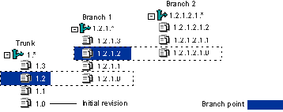

Branching is a separate line of development consisting of one or more revisions that diverge from a revision on the trunk (main line) or from another development branch. Branching lets you develop alternate versions of a file in parallel with other developers who are working on the trunk or on another branch.
Some common reasons for creating branches are:
Branching lets a number of developers continue parallel development on different revisions of the same file; it is also possible for one developer to work on both trunk development and various branches.
Branches can diverge from the trunk or from other branches. The revision from which a branch begins is called the branch point (also known as the base version). The first branch revision from the branch point carries the entire branch point revision number followed by 1.0. Version Manager increments each subsequent branch by 0.1. For example, if revision 1.2 is the branch point, the first branch revision is numbered 1.2.1.0. As with trunk revisions, Version Manager increments each new branch revision by .1; subsequent revisions on this branch would be 1.2.1.1, 1.2.1.2, etc.
Additionally, revision 1.2.1.2 is another branch point, so the first branch revision is numbered 1.2.1.2.1.0. Subsequent revisions on the branch would be 1.2.1.2.1.1, 1.2.1.2.1.2, etc. Version Manager identifies a branch by its branch point revision number followed by 1.*.
However, if you create multiple branches from the same revision, Version Manager increments each new branch revision by 1.0. For example, if you use revision 1.2 to create multiple branches, the first branch will be 1.2.1.*, the second branch will be 1.2.2.*, the third branch would be 1.2.3.*, etc.
The Revision pane is the only pane from the main window that displays branch information.
Branches are created when you:
| About Automatic Branching | Setting Up Automatic Branching |
| About Branching Using Multiple Locks | Setting Up Multiple Locks for Branching |
| Branching Files | Checking In |
| Check In Dialog Box | About Merging |